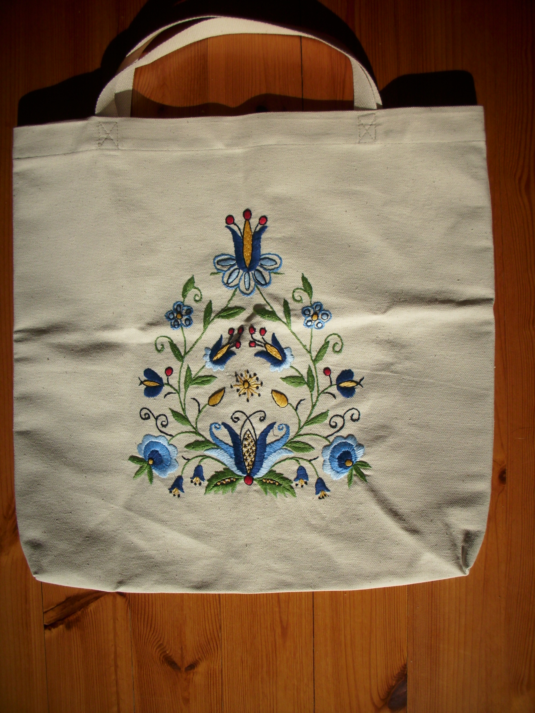

Słownik i tradycje regionalne
Czy rozumiesz słowa
swoich dziadków?
Poznaj znaczenia regionalnych słów, przeczytaj o lokalnych tradycjach
i sprawdź swoją wiedzę w krótkim quizie.
Trzy słowa na początek
Z tradycji regionalnych


Fot. Cassubin / Wikimedia Commons, CC BY-SA 4.0. Zdjęcie bez zmian.

Quiz
Znasz te słowa?
Wybierz region i temat. Odpowiedz na maksymalnie 10 pytań, a po każdej odpowiedzi przeczytaj wyjaśnienie.
Wybierz swoją rundęBez limitu czasu. Ze źródłami.
Kto zbiera te słowa?
Kultura od Nowa to projekt realizowany w ramach olimpiady Zwolnieni z Teorii. Udostępniamy słowa i tradycje wraz ze źródłami, do których możesz zajrzeć.